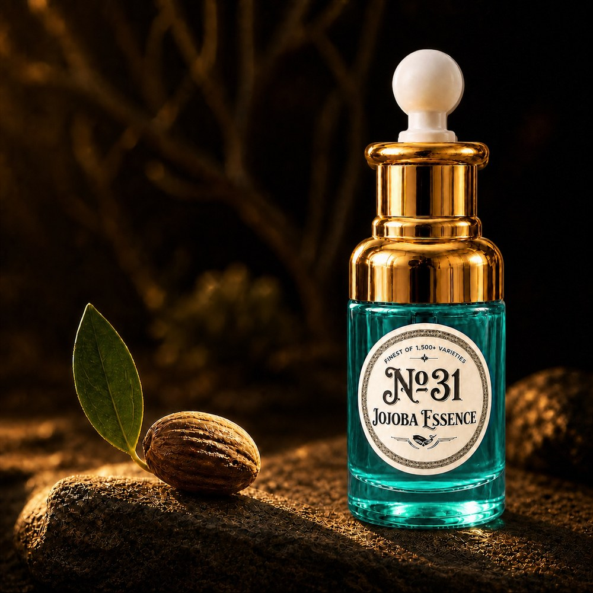
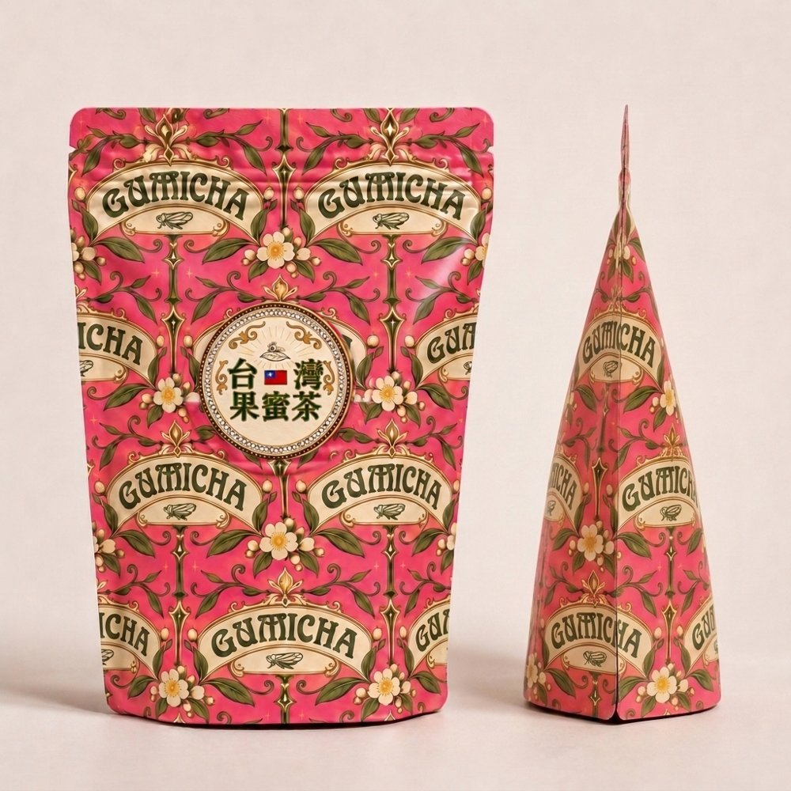

♛
Taiwan Tomato
日式除毛・美容沙龍
日本人經營的除毛・美容沙龍
全體美容師皆為日籍人士
台北公館
服務項目
日式無痛除毛
Procell 臉部膚質護理
Procell 頭皮護理
水飛梭＋奈米微電流
法式角蛋白
日式眉毛設計
接睫毛
店內商品

荷荷芭精華 No.31

台灣果蜜茶
預約・諮詢
預約與諮詢請透過官方LINE與我們聯繫。
官方LINE 預約・諮詢
Instagram
@taiwantomato_tw（女性）
@taiwantomato_men（男性）
@taiwan_tomato.san（日本語）
店家資訊
店名
Taiwan Tomato 日式除毛・美容沙龍
地址
臺北市大安區新生南路3段60巷12號
公休日
週日・週一
聯絡方式
官方LINE
@taiwantomato
營運公司
朋朋有限公司（統一編號 53750298）